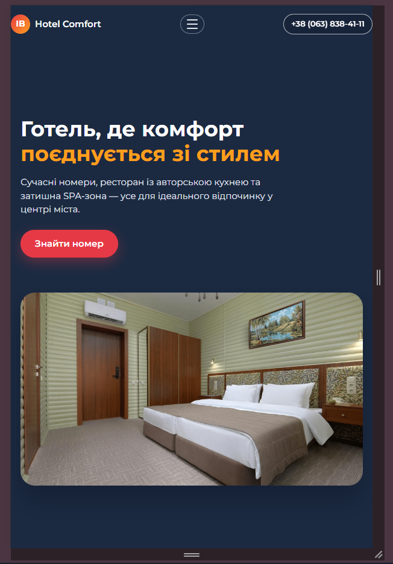

Лабораторна робота №3. Адаптивна верстка веб-сторінки
Тема: «Адаптивна верстка. Використання медіа-запитів CSS3 для створення інтерфейсу, що коректно працює на desktop, tablet та mobile-пристроях».
Мета: навчитися адаптувати готовий макет головної сторінки «Hotel Comfort» під різні розміри екранів, реалізувати адаптивне бургер-меню, гнучку сітку контенту й забезпечити відсутність горизонтального скролу на мобільних пристроях.
Метатег viewport і базові брейкпоінти:
Для коректного масштабування сторінки на смартфонах використовується метатег
viewport. Усі стилі верстки розраховані на те, що ширина віртуального вікна
відповідає ширині екрана пристрою.
<meta name="viewport" content="width=device-width, initial-scale=1.0" />
Основні брейкпоінти у файлі css/style.css:
max-width: 900px— перехід до мобільної компоновки (колонки в один стовпчик, бургер-меню);max-width: 640px— додаткова оптимізація форм, футера та сітки номерів.
@media (max-width: 900px) {
.hero__inner,
.about-section__inner,
.contacts__inner,
.rooms__grid {
grid-template-columns: 1fr;
}
.hero {
background: #1b2a41;
}
.booking__form {
grid-template-columns: 1fr 1fr;
}
.rooms__grid {
grid-template-columns: repeat(2, minmax(0, 1fr));
}
}
Адаптивне бургер-меню:
На широких екранах навігація відображається як горизонтальний список посилань. На екранах з шириною до 900px з’являється кнопка-бургер, а меню ховається під шапкою і розкривається плавно вниз.
Фрагмент HTML-коду шапки з бургер-кнопкою:
<header class="header">
<div class="container header__inner">
<a href="index.html" class="logo">...</a>
<button class="burger" aria-label="Меню">
<span class="burger__line"></span>
<span class="burger__line"></span>
<span class="burger__line"></span>
</button>
<nav class="nav" id="main-nav" aria-label="Головна навігація">
<ul class="nav__list">
<li class="nav__item"><a href="#hero" class="nav__link nav__link--current">Головна</a></li>
<li class="nav__item"><a href="#rooms" class="nav__link">Номери</a></li>
...
</ul>
</nav>
<a class="header__phone" href="tel:+380638384111">+38 (063) 838-41-11</a>
</div>
</header>
CSS-частина, що відповідає за перетворення меню на бургер-меню:
.burger {
display: none;
align-items: center;
justify-content: center;
flex-direction: column;
gap: 5px;
width: 40px;
height: 32px;
border-radius: 999px;
border: 1px solid rgba(248, 250, 252, 0.4);
cursor: pointer;
}
.burger__line {
width: 18px;
height: 2px;
border-radius: 999px;
background-color: #e5e7eb;
transition: transform 0.2s ease, opacity 0.2s ease;
}
@media (max-width: 900px) {
.burger {
display: inline-flex;
}
.nav {
position: absolute;
inset-inline: 0;
top: 100%;
background-color: #111827;
padding: 12px 16px 16px;
max-height: 0;
overflow: hidden;
opacity: 0;
transform: translateY(-8px);
pointer-events: none;
transition: max-height 0.25s ease, opacity 0.25s ease, transform 0.25s ease;
}
.header--menu-open .nav {
max-height: 400px;
opacity: 1;
transform: translateY(0);
pointer-events: auto;
}
.header--menu-open .burger__line:nth-child(1) {
transform: translateY(7px) rotate(45deg);
}
.header--menu-open .burger__line:nth-child(2) {
opacity: 0;
}
.header--menu-open .burger__line:nth-child(3) {
transform: translateY(-7px) rotate(-45deg);
}
}
Клас header--menu-open додається до елемента
<header> за допомогою простого JavaScript-коду при натисканні
на кнопку бургер-меню. Повторне натискання прибирає клас і приховує меню.
Адаптивність для мобільної версії сайту:
Для покращення читабельності та зручності взаємодії на смартфонах змінено кількість колонок у сітках, відступи та розміри елементів. Основні зміни:
- герой-секція переходить у колонку: текст і зображення розташовуються одне під одним;
- форма пошуку номера переходить з чотирьох колонок у дві, а потім в одну колонку;
- сітка номерів показує 4 картки в ряд на десктопі, 2 — на планшеті та 1 — на мобільних;
- контакти і футер вирівнюються у стовпчик, елементи займають всю ширину екрана.
@media (max-width: 640px) {
.booking__form {
grid-template-columns: 1fr;
}
.rooms__grid {
grid-template-columns: 1fr;
}
.contacts__inner {
grid-template-columns: 1fr;
}
.footer__inner {
flex-direction: column;
align-items: flex-start;
}
}
Тестування в інструментах розробника:
Перевірка адаптивності виконувалася в режимі «Responsive Design» інструментів розробника браузера. Послідовно змінювалася ширина вікна, емулювалися популярні пристрої (iPhone / Android-смартфони / планшети). Було перевірено:
- відкриття та закриття бургер-меню, відсутність горизонтального скролу;
- перебудову hero-секції, форми пошуку та карток номерів;
- читабельність тексту в блоці контактів та коректну роботу форми зворотного зв’язку;
- стабільність макету при зміні орієнтації пристрою.
Вигляд сайту на мобільних пристроях:
Висновки:
У ході виконання лабораторної роботи №3 було реалізовано адаптивну верстку головної сторінки веб-застосунку «Hotel Comfort». Використані медіа-запити, Flexbox та CSS-Grid дозволили створити гнучкий макет, що коректно відображається на екранах різної ширини.
Окремо було розроблено та протестовано бургер-меню, яке замінює горизонтальну навігацію на мобільних пристроях. У результаті інтерфейс сайту залишився зручним, читабельним і логічно структурованим як на десктопах, так і на смартфонах та планшетах.